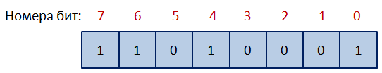

Подвиг 4. На вход программе подается целое десятичное число. Прочитайте его и, используя битовые операции, переключите 3-й и 0-й биты введенного числа.
Выведите на экран полученное числовое значение.
P.S. Распределение номеров бит представлено на следующем рисунке.

Тесты: https://github.com/selfedu-rus/test-python-base/tree/main/10/10.2.4
Sample Input:
58
Sample Output:
51